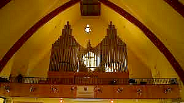

Paroisse Saint-Paul de Senneterre Feuillet paroissial du 25 novembre au 8 décembre 2024
Mon Dieu tu es
Tu es l’air que je respire Tu es la fraîcheur du matin Tu es la chaleur du soleil sur ma peau Et la douceur du vent dans mes cheveux Tu es le chant de l’oiseau Et le murmure du ruisseau Tu es le parfum de la rose Et la couleur des fleurs Tu es la montagne, le ciel et la terre Tu es la rivière, la mer et l’univers Tu es la nourriture Tu es ma nourriture Tu es mon énergie Tu es ma vie Tu es la Vérité Tu es l’Amour Tu es le Temps Tu es la Vie Tu es en moi Je suis en toi Tu es moi Je suis toi Tu es Tout ce qui est
Richard Migneault
Paroles pour le cœur
On ne détruit pas les ténèbres en luttant contre elles, mais en allumant la lumière. On ne détruit pas le mal en luttant contre lui, mais en faisant le bien. On ne détruit pas la haine ou la peur en s’acharnant contre elles, mais en laissant monter la tendresse-amour. C’est en allant vers l’est que l’on s’éloigne de l’ouest. C’est en allant vers plus de vie qu’on dépasse la mort. C’est en allant vers ce qui dure qu’on est libre de ce qui ne dure pas.
Placide Gaboury
Contes et Chansons 3.0 L’Esprit de l’orgue

Le Comité de l’orgue et le Conservatoire vous invitent à leur concert de Noël « Contes et Chansons 3.0 L’Esprit de l’orgue » le samedi 14 décembre à 19 h à l'église St-Sauveur de Val-d'Or. Ce sera une soirée magique! Vous pouvez déjà acheter vos billets en cliquant sur le lien https://www.zeffy.com/fr-CA/ticketing/12c96f33-856f-498c-b3e8-0ae677307a18. Il y aura des billets en nombre limité au bureau de la Paroisse de Val-d'Or, ainsi qu'à la porte (argent comptant seulement). Merci de votre soutien !
Notez qu’une bonne partie des recettes ira à la restauration de l'orgue.
Seigneur, rendez nos cœurs assez humains pour que nos frères, en y entrant, se trouvent chez eux. Rendez nos cœurs assez purs pour qu’ils s’y sentent aussi chez vous.
Monseigneur Besson
L’Équipe de la Joie
Notre mission est d’apporter de la joie aux personnes de notre entourage, surtout celles qui sont seules ou malades, par des visites, des appels téléphoniques, en soulignant les fêtes et toutes initiatives pour contrer l’isolement de nos aînés. Nous avons besoin de bénévoles pour remplir ce mandat.
Si vous êtes intéressé(e)s à joindre l’Équipe de la Joie, vous pouvez donner votre nom au secrétariat au 819-737-2045 ou encore le 819-737-4667. Merci !
Capitation 2024
Afin de garder notre Église bien vivante, votre don est une façon de la conserver au niveau financier pour s’assurer un lieu de culte accueillant et sécuritaire.
Vous pouvez également faire vos dons via la Poste en les adressant à La Fabrique St-Paul, 700, 8e Avenue, Senneterre, J0Y 2M0.
Heures d’ouverture du secrétariat
Lundi, mercredi et vendredi : 9h30 à 13h00
Les choses les plus précieuses ne peuvent pas être achetées ou construites par l’homme. Prenons quelques instants pour remercier Dieu de ces merveilles que nous oublions trop souvent.
Revenus du 4 au 17 novembre
Quêtes
548,95
Prions en Église
29,80
Lampions
39,00
Capitation
213,89
Agenda liturgique du 24 novembre au 8 décembre 2024
Dim 24
9h30
Messe à La Morandière
11h00
Messe à Barraute
16h00
Messe :
Fernando, Marie et Francine RodrigueGinette Rodrigue Membres défunts de l’AREQ
Lun 25
15h00
Messe :
Famille MichaudAlice et les enfants
Mar 26
Congé de l’abbé Laurent
Mer 27
15h00
Messe :
Gisèle TremblayDenise Gagnon
Jeu 28
15h30
Messe à Barraute
Ven 29
15h30
Messe à La Morandière
Sam 30
Pas de messe aujourd’hui
Dim 1
10h30
Messe à Lebel-sur-Quévillon
16h00
Messe :
Georges-Édouard TremblayDenise Gagnon Jean-Guy CourtemancheCollecte au service
Lun 2
15h00
Messe :
À nos intentionsanniversaire de mariageM. et Mme Martial Duchemin
Mar 3
Congé de l’abbé Laurent
Mer 4
14h00
Messe :
Thérèse Raymond BeauvaisCollecte au serviceÀ la résidence l’Îlot d’Or
Jeu 5
15h30
Messe à Barraute
Ven 6
15h00
Messe :
Hélène Coulombe1ᵉʳ anniversaireDenis et Christiane